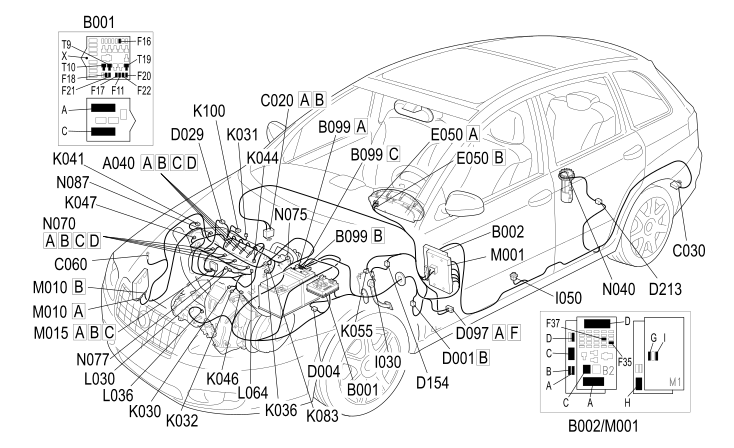

E5050 DIESEL ENGINE ELECTRONIC MANAGEMENT COMPONENT LOCATION
- Path
- Electrical equipment > 1 ELECTRICAL FUNCTIONS > E50 ENGINE CONTROL AND MANAGEMENT SYSTEMS > E5050 DIESEL ENGINES ELECTRONIC MANAGEMENT > E5050 DIESEL ENGINE ELECTRONIC MANAGEMENT COMPONENT LOCATION
- Kind
- topic
- Applies to
- engines: 1.9 JTD 16v; all production periods; only with equipment: AUTOMATIC TRANSMISSION
- Interactive page
- https://sloeber94.github.io/elrnDB-fCrm/en/#/194001643
Applies to: engines: 1.9 JTD 16v; all production periods; only with equipment: AUTOMATIC TRANSMISSION

Component code | Description | Reference to the assembly |
|---|---|---|
HEATER PLUGS | ||
ENGINE COMPARTMENT JUNCTION UNIT | ||
MAXI FUSE BOX ON BATTERY | ||
PASSENGER SIDE DASHBOARD EARTH | ||
LEFT REAR EARTH | ||
INJECTION CONTROL UNIT EARTH | ||
FRONT/DASHBOARD COUPLING | ||
FRONT/ENGINE COUPLING | ||
ENGINE CABLES/ENGINE SERVICES CABLE COUPLING | ||
SHORT CIRCUIT COUPLING | ||
DASHBOARD/BRAKE PEDAL SWITCH BRAID COUPLING | ||
FUEL TANK COUPLING | ||
INSTRUMENT PANEL | ||
BRAKE PEDAL SWITCH | ||
INERTIA SWITCH | ||
INSUFFICIENT ENGINE OIL PRESSURE SENSOR | ||
WATER IN DIESEL FILTER SENSOR | ||
ENGINE OIL LEVEL SENSOR | ||
ENGINE COOLANT TEMPERATURE SENSOR/SENDER UNIT | ||
AIR FLOW METER | ||
AIR PRESSURE - TEMPERATURE SENSOR | ||
RPM SENSOR | ||
TIMING SENSOR | ||
ACCELERATOR PEDAL POTENTIOMETER | ||
FUEL PRESSURE SENSOR | ||
TEMPERATURE SENSOR AND HEATING RESISTANCE | ||
EGR SOLENOID VALVE | ||
TURBINE VARIABLE GEOMETRY CONTROL SOLENOID VALVE | ||
FLOW MODIFYING SOLENOID VALVE | ||
BODY COMPUTER | ||
ENGINE MANAGEMENT CONTROL UNIT | ||
HEATER PLUGS CONTROL UNIT | ||
FUEL PUMP AND LEVEL GAUGE | ||
INJECTOR | ||
INTEGRATED THROTTLE CASING ACTUATOR | ||
FUEL PRESSURE REGULATOR | ||
FUEL PRESSURE REGULATOR ON RAIL |
Topics linked from this page (49)
- 1040A FUEL TANK AND COMPONENTS
- 1060E DIESEL PRESSURE PUMP AND CONTROL
- 1060F INJECTORS AND PIPES
- 1060G DIESEL INJECTION PRESSURE PUMP ELECTRONIC CONTROL
- 1064B CONTROL/SAFETY DEVICES
- 1068A ACCELERATOR PEDAL CONTROL
- 1080C EXHAUST GAS RECIRCULATION SYSTEM (E.G.R.)
- 1084A INDICATORS/CHECK DEVICES
- 5505A MULTI-FUNCTION COMPONENTS
- 5520C COLD STARTING SYSTEM (DIESEL ENGINES)
- 5530B BATTERY AND LEADS
- 5560B ANALOGUE CONTROL PANEL
- A040 HEATER PLUGS
- B001 ENGINE COMPARTMENT JUNCTION UNIT
- B099 MAXI FUSE BOX ON BATTERY
- C020 PASSENGER SIDE DASHBOARD EARTH
- C030 LEFT REAR EARTH
- C060 INJECTION CONTROL UNIT EARTH
- D001 FRONT/DASHBOARD COUPLING
- D004 FRONT/ENGINE COUPLING
- D029 ENGINE CABLES/ENGINE SERVICES CABLE COUPLING
- D097 SHORT CIRCUIT COUPLING
- D154 DASHBOARD/BRAKE PEDAL SWITCH BRAID COUPLING
- D213 FUEL TANK COUPLING
- E050 INSTRUMENT PANEL
- I030 BRAKE PEDAL SWITCH
- I050 INERTIA SWITCH
- K030 INSUFFICIENT ENGINE OIL PRESSURE SENSOR
- K031 WATER IN DIESEL FILTER SENSOR
- K032 ENGINE OIL LEVEL SENSOR
- K036 ENGINE COOLANT TEMPERATURE SENSOR/SENDER UNIT
- K041 AIR FLOW METER
- K044 AIR PRESSURE - TEMPERATURE SENSOR
- K046 RPM SENSOR
- K047 TIMING SENSOR
- K055 ACCELERATOR PEDAL POTENTIOMETER
- K083 FUEL PRESSURE SENSOR
- K100 TEMPERATURE SENSOR AND HEATING RESISTANCE
- L030 EGR SOLENOID VALVE
- L036 TURBINE VARIABLE GEOMETRY CONTROL SOLENOID VALVE
- L064 FLOW MODIFYING SOLENOID VALVE
- M001 BODY COMPUTER
- M010 ENGINE MANAGEMENT CONTROL UNIT
- M015 HEATER PLUGS CONTROL UNIT
- N040 FUEL PUMP AND LEVEL GAUGE
- N070 INJECTOR
- N075 INTEGRATED THROTTLE CASING ACTUATOR
- N077 FUEL PRESSURE REGULATOR
- N087 FUEL PRESSURE REGULATOR ON RAIL